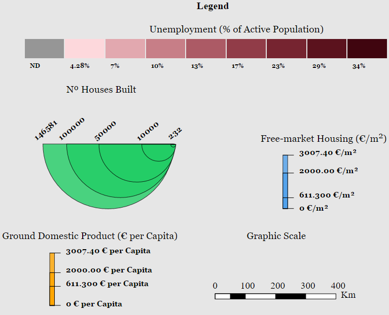

RELATIONSHIP BETWEEN THE UNEMPLOYMENT RATE, FREE-MARKET HOUSING, NUMBER OF HOUSES BUILT AND THE GDP OF THE SPANISH FINANTIAL SITUATION FROM 2002 TO 2015
2002
Play
Stop
Legend
Statistics
Map Comparison
Open Legend
Fullscreen
Legend
Unemployment (% of Active Population)
Nº Houses Built
Free-market Housing (€/m
2
)
Ground Domestic Product (€ per Capita)
Graphic Scale
Statistics
Free-market Housing (€/m²)
GDP (€/capita)
Number of houses built (nº)
Unemployment (%)
2002
